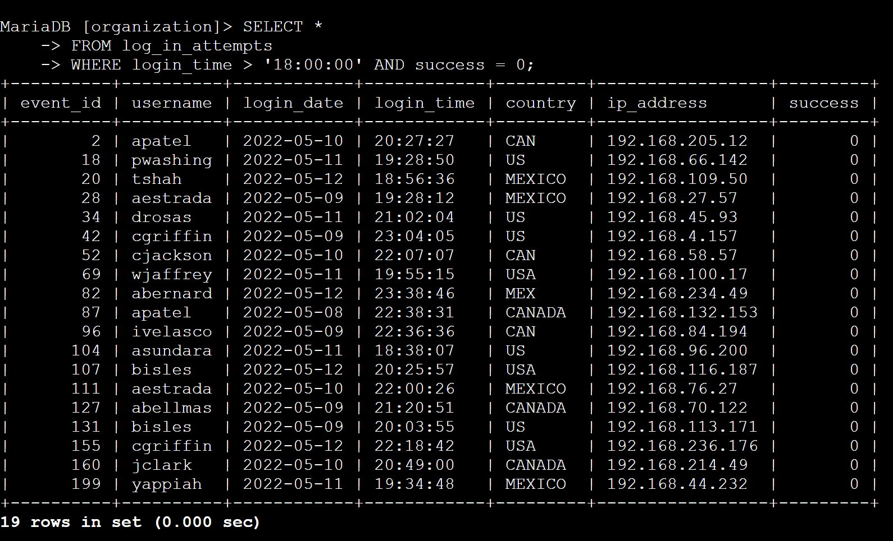
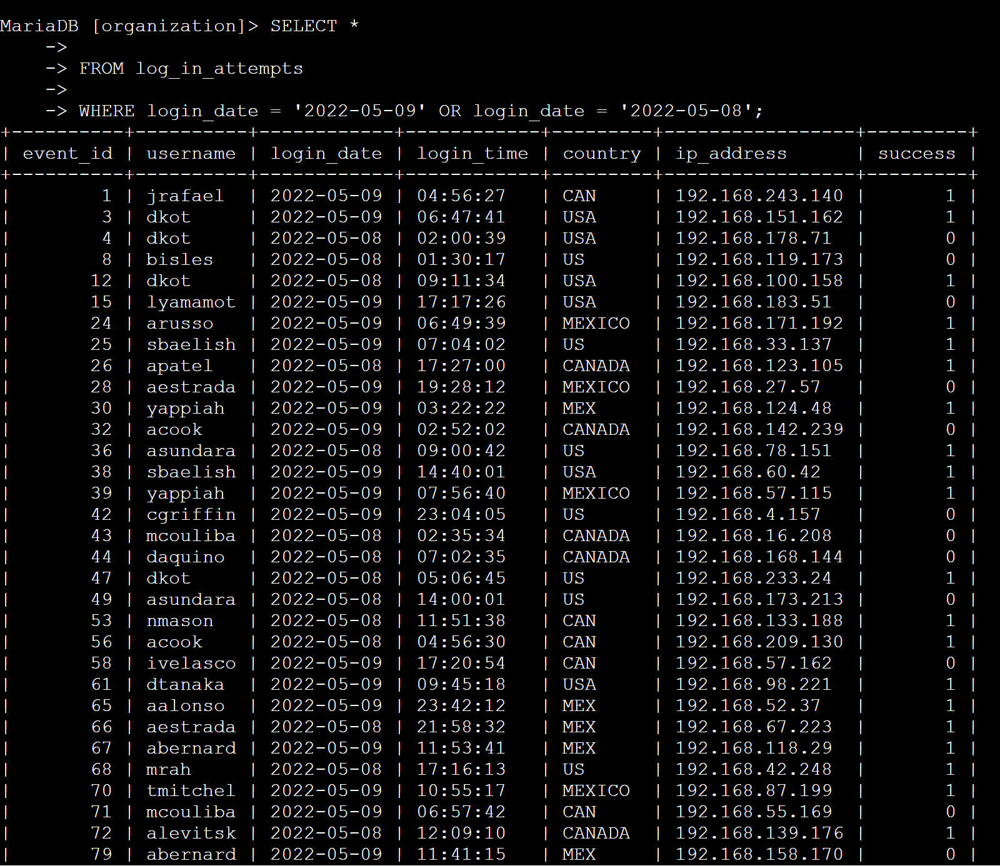
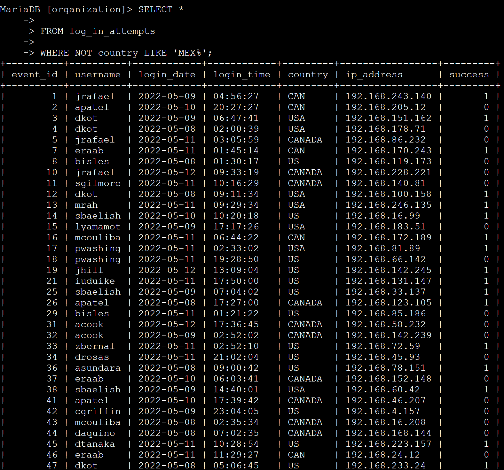
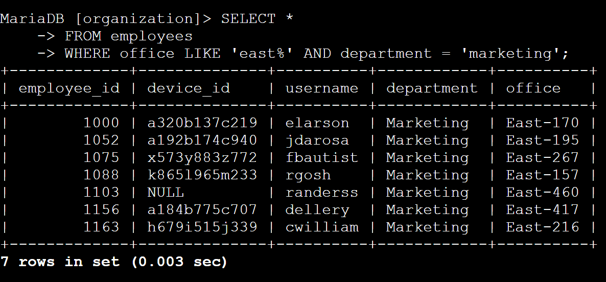
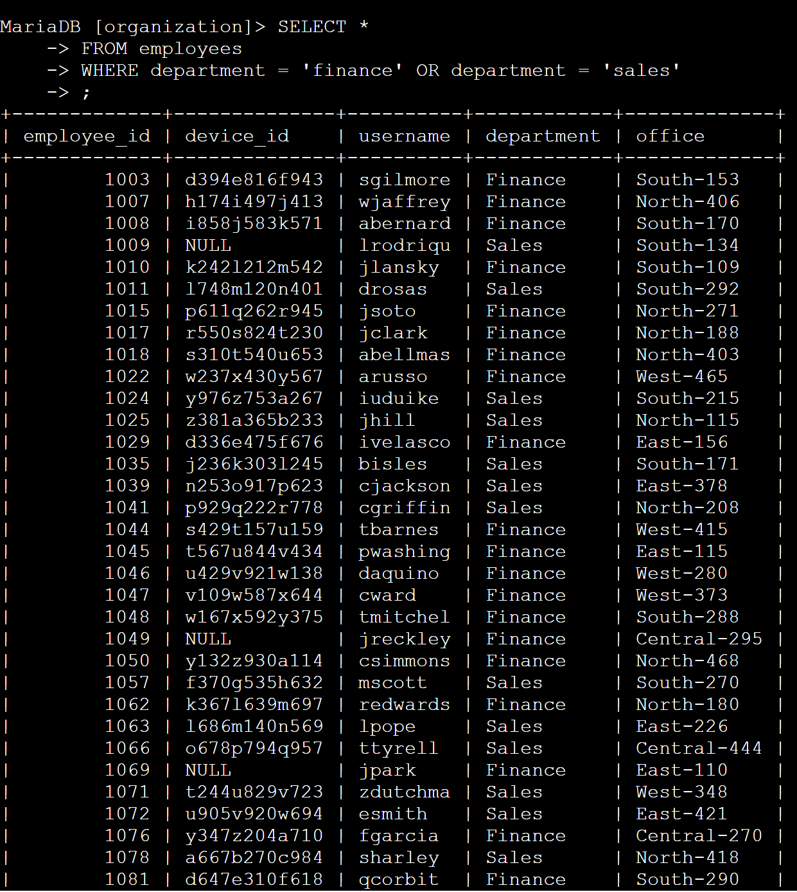
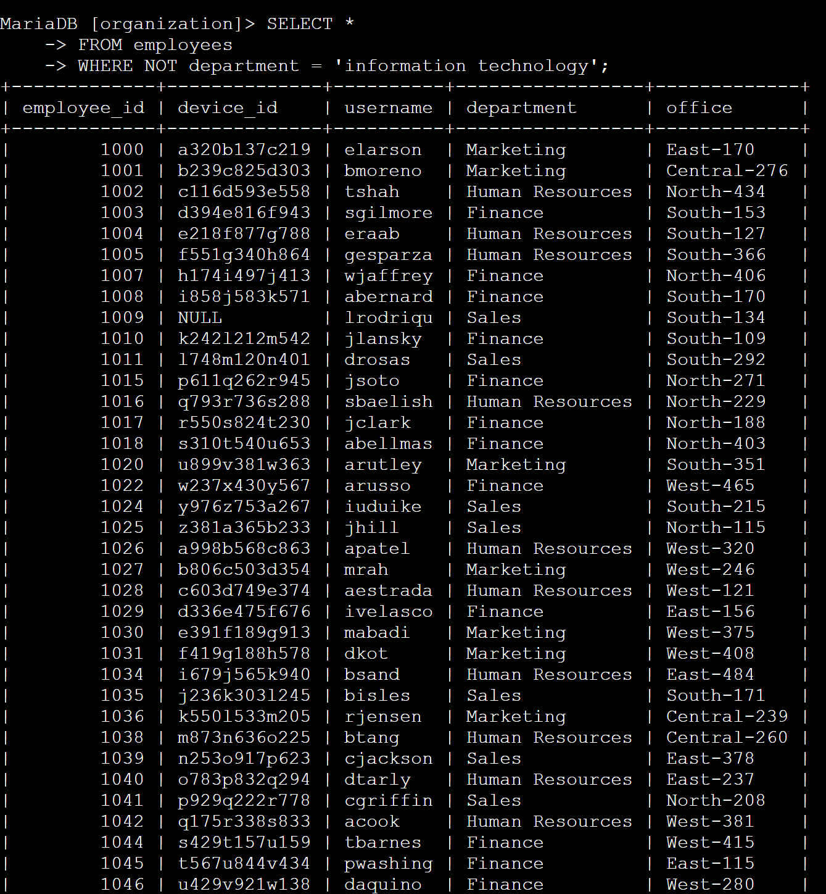

Sql Quiries
I worked on this project as part of my Google Cybersecurity Professional Certificate. I was introduced to SQL operators such as: AND, OR, LIKE, NOTto filter an employee database. The first three examples are used to investigate login attempts. The last three examples are used to monitor devices that need system updates.
Note: This data is fictional and provided by Google on Coursera.
Retrieve after hours failed login attempts

I used SELECT * to get all results within my specified parameters in the next 2 lines.
FROM log_in_attempts is used to retrieve the login attempts made matching the next set of parameters.
WHERE login_time > '18:00:00' is used to filter down to login attempts made after hours.
AND success = 0; is used to filter for only failed log in attempts.
Retrieve login attempts on specific dates

In this step I have used OR to specify login attempts from either 2022-05-09 or 2022-05-08.
Retrieve login attempts outside of Mexico

I used NOT and LIKE to get all login attempts made outside of Mexico
Retrieve employees in Marketing

In this step I used SELECT * FROM employees retrieve all employees matching any East office building in the marketing department. Using east% outputs all results with East offices.
Retrieve employees in Finance or Sales

In this step I was tasked with filtering for all employees in the Finance OR Sales departments.
Retrieve all employees not in IT

For this final task I used WHERE NOT to output all employees that are not categorized as being in the IT department.
Summary
In this project I have demonstrated the ability to use AND, OR, NOT, and LIKE in SQL commands. I used AND to find login attempts after a certain time, and failed login attempts. I used OR to find logins on two different dates. I also used OR to find devices in finance or sales departments. I used NOT to find all login attempts outside of Mexico. Finally I used LIKE to find marketing devices in all East office locations.
These commands are helpful to parse through data without using too much time, or missing things because of human errors.